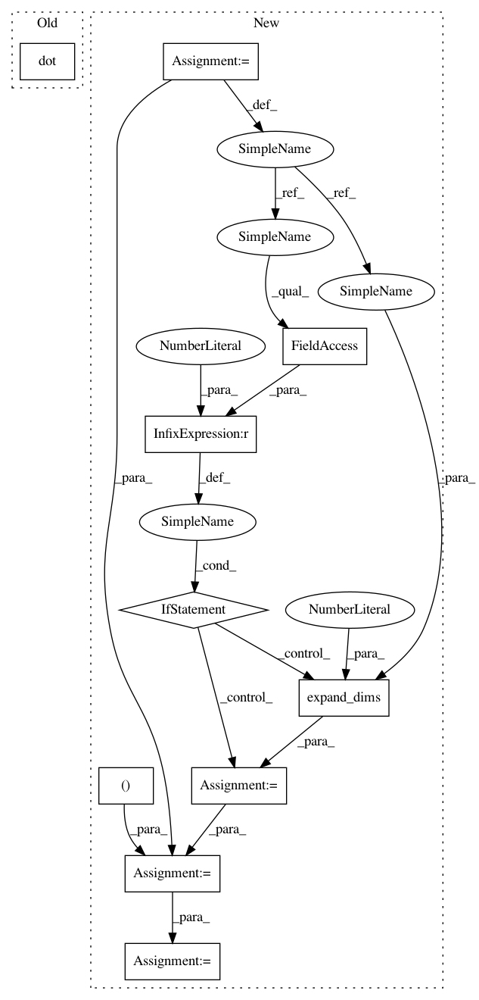

b0d0053b1f1738640fc99fba642c83af42d10b22,tests/helper.py,,regularize_tangent_vec,#Any#Any#Any#,76
Before Change
jacobian = group.jacobian_translation(
point=base_point,
left_or_right="left")
tangent_vec_at_id = np.dot(np.linalg.inv(jacobian),
tangent_vec)
tangent_vec_at_id = group.regularize(
tangent_vec_at_id)
regularized_tangent_vec = np.dot(jacobian, tangent_vec_at_id)
return regularized_tangent_vec
After Change
following the regularization convention
base_point = group.regularize(base_point)
if tangent_vec.ndim == 1:
tangent_vec = np.expand_dims(tangent_vec, axis=0)
assert tangent_vec.ndim == 2
jacobian = group.jacobian_translation(
point=base_point,
left_or_right="left")
inv_jacobian = np.linalg.inv(jacobian)
tangent_vec_at_id = np.dot(tangent_vec,
np.transpose(inv_jacobian, axes=(0, 2, 1)))
tangent_vec_at_id = np.squeeze(tangent_vec_at_id, axis=1)
tangent_vec_at_id = group.regularize(tangent_vec_at_id)
regularized_tangent_vec = np.dot(tangent_vec_at_id,
np.transpose(jacobian, axes=(0, 2, 1)))
In pattern: SUPERPATTERN
Frequency: 3
Non-data size: 10
Instances
Project Name: geomstats/geomstats
Commit Name: b0d0053b1f1738640fc99fba642c83af42d10b22
Time: 2018-02-02
Author: ninamio78@gmail.com
File Name: tests/helper.py
Class Name:
Method Name: regularize_tangent_vec
Project Name: geomstats/geomstats
Commit Name: b0d0053b1f1738640fc99fba642c83af42d10b22
Time: 2018-02-02
Author: ninamio78@gmail.com
File Name: tests/helper.py
Class Name:
Method Name: regularize_tangent_vec
Project Name: geomstats/geomstats
Commit Name: 506b234094009d55d326f1ce957f53f15d4b65ee
Time: 2018-02-26
Author: ninamio78@gmail.com
File Name: geomstats/spd_matrices_space.py
Class Name: SPDMetric
Method Name: log
Project Name: geomstats/geomstats
Commit Name: 506b234094009d55d326f1ce957f53f15d4b65ee
Time: 2018-02-26
Author: ninamio78@gmail.com
File Name: geomstats/spd_matrices_space.py
Class Name: SPDMetric
Method Name: exp